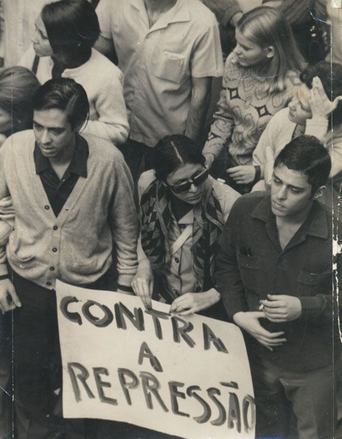
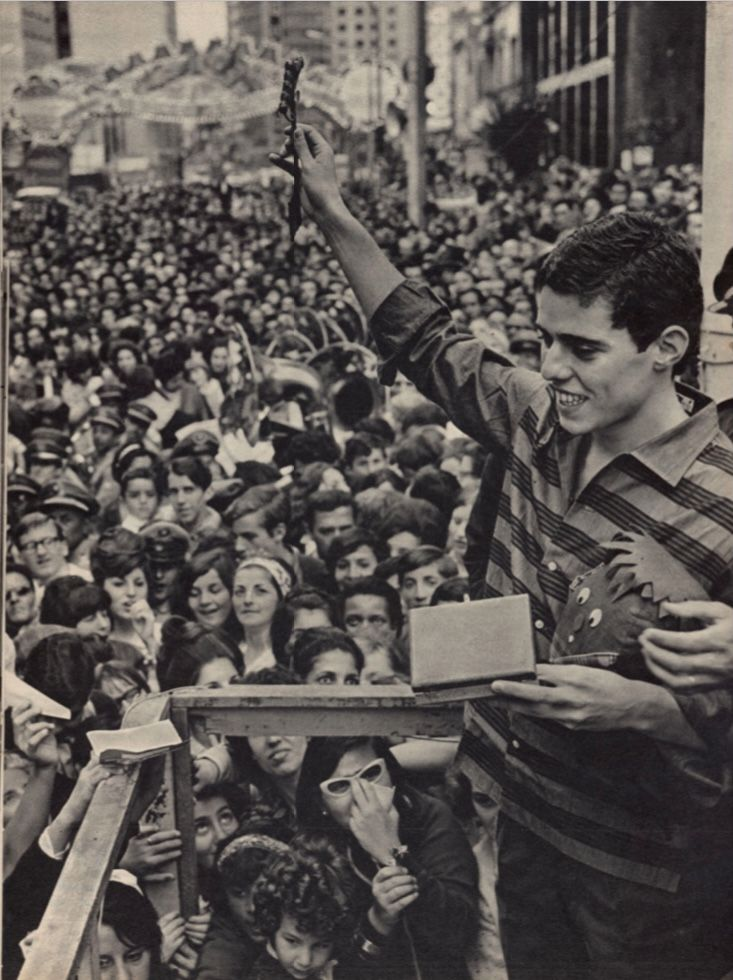
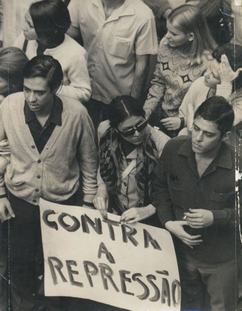
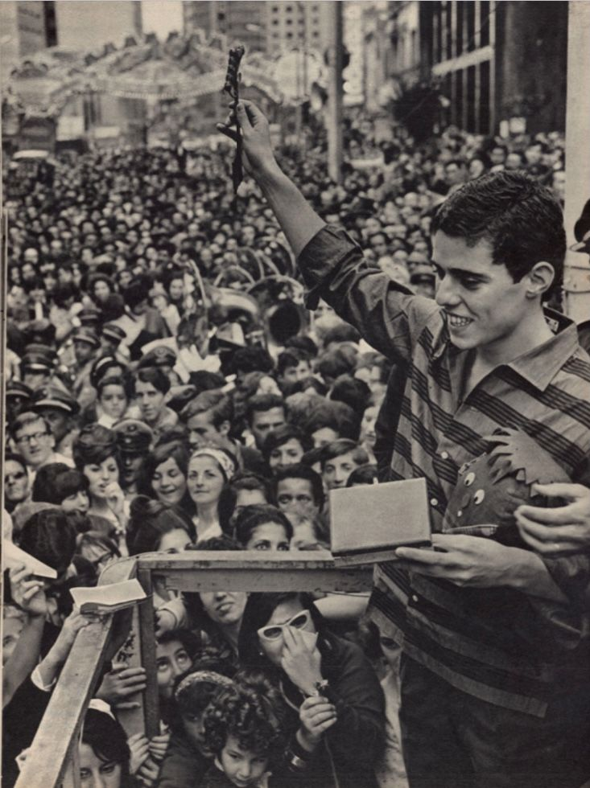

Construção
“Construção”, lançada por Chico Buarque em 1971, é uma das músicas mais impactantes e geniais da MPB. Muito mais do que uma canção, ela é quase uma obra literária em forma de música, misturando poesia, técnica e crítica social de um jeito que poucos artistas conseguiram.
A letra conta a história de um trabalhador comum, um homem simples que sai de casa, beija a esposa, enfrenta o transporte lotado e vai trabalhar na construção civil. No fim do dia, ele morre de forma trágica, “na contramão, atrapalhando o tráfego”. Mas o que torna essa música tão poderosa é o modo como Chico conta essa rotina: os versos se repetem com pequenas mudanças nas palavras, o que muda completamente o sentido das frases a cada estrofe. É como se o ouvinte fosse obrigado a reviver a mesma cena, mas de um ângulo diferente, mais confuso, mais mecânico, mais desumano.
A estrutura da música é milimetricamente pensada. A repetição cria um ritmo quase hipnótico e sufocante, lembrando o ciclo sem fim da vida do operário, preso entre o trabalho e a invisibilidade. A melodia cresce até um ponto de tensão, acompanhando a sensação de tragédia anunciada.
“Construção” é, acima de tudo, uma crítica profunda à desumanização do trabalhador e à indiferença da sociedade diante das vidas simples que se perdem todos os dias. É um retrato amargo, mas real, de um país desigual, onde o homem que levanta prédios pode cair e ser esquecido em segundos.
Até hoje, “Construção” continua sendo um marco da música brasileira, admirada por sua complexidade poética e pelo poder de emocionar e provocar reflexão. É daquelas canções que fazem a gente parar e pensar, sobre o valor da vida, do trabalho e da humanidade que muitas vezes passa despercebida.
Apesar de Você
“Apesar de Você”, escrita por Chico Buarque em 1970, nasceu parecendo uma simples canção de amor, mas na verdade escondia uma forte crítica ao regime militar que dominava o Brasil na época. O “você” da música não era uma pessoa, e sim a ditadura, com toda a sua censura, autoritarismo e falta de liberdade.
Com um ritmo de samba suave e contagiante, Chico disfarçou sua indignação com versos irônicos e cheios de coragem. Quando ele canta “Hoje você é quem manda, falou, tá falado”, dá pra sentir a revolta contida, e quando chega no refrão “Apesar de você, amanhã há de ser outro dia”, vem junto uma mensagem de esperança, como se dissesse que a alegria e a liberdade voltariam, mais cedo ou mais tarde.
A música foi liberada pela censura porque os avaliadores acharam que era só uma briga de casal. Mas assim que começou a tocar nas rádios e virar sucesso, o governo percebeu o verdadeiro recado, e aí foi tarde demais. A canção já tinha virado um hino de resistência, cantado por milhares de brasileiros que viam nela um jeito de protestar sem precisar gritar.
“Apesar de Você” acabou se tornando um marco na história da música brasileira, provando que a arte pode ser uma forma poderosa de enfrentar tempos difíceis. Até hoje, quando a gente ouve, ainda dá aquele sentimento de que, sim, amanhã há de ser outro dia.
Cálice
“Cálice”, composta por Chico Buarque e Gilberto Gil em 1973, é uma das canções mais fortes e simbólicas da resistência à ditadura militar. Sob uma aparência poética e religiosa, ela esconde uma das críticas mais diretas e dolorosas à censura e à repressão política do período.
O título é um trocadilho genial entre “Cálice”, o cálice bíblico que representa sofrimento e sacrifício, e “Cale-se”, a ordem imposta a quem ousava falar. Essa ambiguidade é o coração da música: de um lado, o peso do martírio e da dor; do outro, a brutalidade do silêncio forçado.
Cada verso é carregado de angústia e impotência, refletindo o desespero de artistas e cidadãos que viam suas vozes sendo caladas pelo medo e pela censura. Quando Chico canta “Quero beber, preciso de força / Tenho sede”, ele não fala apenas de sede literal, mas de uma sede de liberdade, de verdade e de expressão. O pedido por “algo mais forte” é o clamor por coragem, um brado abafado num tempo em que qualquer palavra podia ser perigosa.
A música chegou a ser censurada antes mesmo de ser lançada, e nas apresentações ao vivo, Chico e Gil eram obrigados a interromper o canto, substituindo o refrão por um silêncio ensurdecedor, um gesto simbólico que dizia mais do que qualquer verso.
“Cálice” é, portanto, um protesto em forma de poesia, uma oração desesperada e corajosa contra o autoritarismo. É o grito sufocado de uma geração que não podia gritar, mas que encontrou na arte uma maneira de continuar resistindo. Mesmo décadas depois, ela continua atual e poderosa, lembrando o preço alto que se paga quando a liberdade de expressão é negada.
 


